Rescue $ZORK from a HANA database
The ABAP server is gone. The HANA tenant behind it still runs. Here is one real rescue, start to finish: the code comes back as an abapGit repository, from the command line and from VS Code, and both give the same bytes.
The situation
You run the ABAP Platform Trial 2025 in a container. Suppose you forgot to renew the ABAP licence. ABAP stops letting you work, and the container's start script stops the whole container when ABAP stops. But your own developments are still there: they live in the HANA database, and the HANA in the 2025 image has its own built-in licence, valid until 2028-02-11.
- If your A4H still works: great. Export from the server while you can: abapGit, or
vsp export(route 1). - If it no longer does: start the container's HANA on its own, without ABAP, and pick your code out of the database (routes 2 and 3). Do not delete the container or its volumes.
- Trial 2023 is different: there the HANA key is a temporary key like ABAP's and expires with it. Take a backup of the tenant while the key is valid and restore it into a HANA that lives longer (the 2025 image, or HANA express, which has no expiry).
Which route
| Situation | Route |
|---|---|
| The ABAP server still runs | Export from the server: abapGit, or vsp export |
| The server is gone, the database is not | osd hana extract on the command line: an abapGit repository |
| The same, raw | vsp hana dump: sources as .abap files plus repository rows as JSONL, no abapGit layout |
| The same, from VS Code | "OSD: Extract my code from HANA" with Only package… (0.7.3140 and later) |
A live server knows things the database does not show: screens, GUI statuses, transactions, MIME objects. If the server can still be started, export from it first.
1While the server is alive: vsp export
vsp exports packages as an abapGit ZIP through its ZADT_VSP WebSocket service on the ABAP server (see "Export & Import" in its cli-guide).
vsp export '$ZORK' -o zork.zip --subpackages1bBefore you export: run it over HANA
OSG can build the rescued code straight from the tenant's tables and serve the tenant's own ICF nodes with it, with no ABAP server. It also reads MIME objects (SMW0) from the tenant's WWWDATA when the code asks for one, so Zork gets its story file from the database itself, which an export cannot give you.
node tools/hana-serve-scope.mjs --root <HTTP_HANDLER> [--root ...]
( set -a; . <env file>; set +a
STG_DB=hana HANA_EXISTING_SCHEMA=1 OSD_CLIENT=<client> OSD_WEB_PACKS=none \
node tools/hana-serve.mjs --port <port> --w3mi-check <OBJID> )
curl -s http://127.0.0.1:<port>/sap/bc/zork/The scope cut keeps only what the named roots reach: for Zork the HTTP handler, the Z-machine and the SMW0 loader, 9 code objects, while 104 objects (the push channel, GUI reports, and an AI library the push channel pulls in) stay out of the build. The only DDL the host sends is two synonyms in a schema of your own, never in the tenant.
| Check over HANA (2026-11-18) | Result |
|---|---|
GET /sap/bc/zork/ | 200, text/html, 12 930 bytes, the tenant's own handler class on its own node |
| HEAD / POST / another client | 200 / 405 / 400 |
Story file out of WWWDATA | 52 216 bytes, SHA-256 equal to the file in zork-abap |
| The tenant's Z-machine on that story | "open mailbox" answers "Opening the small mailbox reveals a leaflet." |
| Writes to the database | none (trace checked) |
2The server is gone: the command line
Get osd and the sidecar from the release, then point osd at the sidecar. The password is never a flag: without --password-stdin or OSD_HANA_PASSWORD, osd asks for it on the terminal.
export OSD_HANA_DUMP=~/bin/osd-hana-dump-linux-amd64Is the code still there?
osd hana doctor --host hana.example --port 30015 --database TENANT --user RESCUERVerdict for the ABAP rescue:
Reachable: yes -- logged on as RESCUER to hana.example, a tenant database.
ABAP schema <SCHEMA>: found, release 758/0000000002, clients 000, 001,
repository: 3018348 source rows (REPOSRC), 1339131 repository objects (TADIR).
ABAP server still attached: unknown (informational).
This login is another kind of login (not the schema owner, not an
administrator) and can only read.
TLS: off -- the connection is NOT encrypted.
Ready to extract: yes -- the next step is `osd hana extract`.Exit code 0. A plain read-only user is all the rescue needs.
Look at the plan first
osd hana extract --host hana.example --port 30015 --database TENANT --user RESCUER \
--package '$ZORK%' --out ~/rescue/zork --dry-runplan: 29 objects in scope (system holds 29: 29 customer, 0 sap)
per type:
CLAS 14 0.1 MB
INTF 2 0.0 MB
PROG 3 0.0 MB
SAPC 1 0.0 MB (unsupported -- will be listed, not written)
SICF 2 0.0 MB (unsupported -- will be listed, not written)
SUSH 1 0.0 MB (unsupported -- will be listed, not written)
TRAN 2 0.0 MB (unsupported -- will be listed, not written)
W3MI 4 0.0 MB (unsupported -- will be listed, not written)
per package:
$ZORK 4 $ZORK_00 14
$ZORK_01 5 $ZORK_02 6--no-local. In that release --package alone does not narrow (the plan held all 22 828 local objects of the system), and * is not a wildcard, only % is. Both are fixed in 0.7.3140.Extract
The same command without --dry-run. On a terminal it prints the plan and asks before it writes; --yes answers for a script.
sources: 255 programs in 1 statements
sources: 255 written, 0 failed to decode
extract-report: ~/rescue/zork/extract-report.md
10 objects of 29 could not be fully extracted (SAPC 1, SICF 2, SUSH 1,
TRAN 2, W3MI 4). 19 objects written.| Type | In scope | Written | Unsupported |
|---|---|---|---|
| CLAS | 14 | 14 | |
| INTF | 2 | 2 | |
| PROG | 3 | 3 | |
| SAPC, SICF, SUSH, TRAN, W3MI | 10 | 10 | |
| Total | 29 | 19 | 10 |
Exit code 3 means "partial": the 10 unsupported objects (APC application, two ICF nodes, an authorization default, two transactions, four MIME objects) are listed in the report and not written. The result is 41 files under src/ (22 .abap, 19 .xml) plus .abapgit.xml, folder logic FULL.
src/zork_00/ 12 classes and 2 interfaces (31 files)
src/zork_01/ 3 programs (6 files)
src/zork_02/ 2 classes (4 files)3The same from VS Code
Install open-steamgate-<platform>-<version>.vsix from the release: the platform package carries the sidecar. Screenshots are from VS Code 1.147 on Linux, with the Only package… step that ships in 0.7.3140 (#983). With 0.7.3131, use the command line with --no-local.
Command palette: "OSD: Extract my code from HANA".
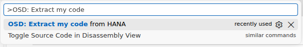
Connection: host, port, tenant and user, one box each, then the password. It is used for this run only.
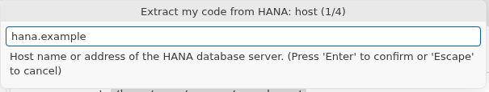
Host, 1 of 4 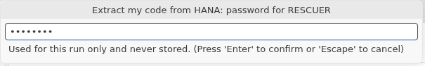
Password, never stored Doctor: the check runs in a cancellable notification and offers to remember the connection (without the password). The verdict is the same text as
osd hana doctor.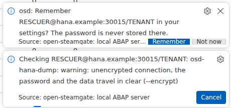
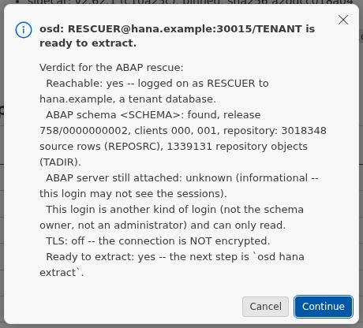
Plan: everything the login can see that counts as yours. On this sandbox that is 22 828 local objects of nine authors (masked; the author of
$ZORKis ZORK_DEV).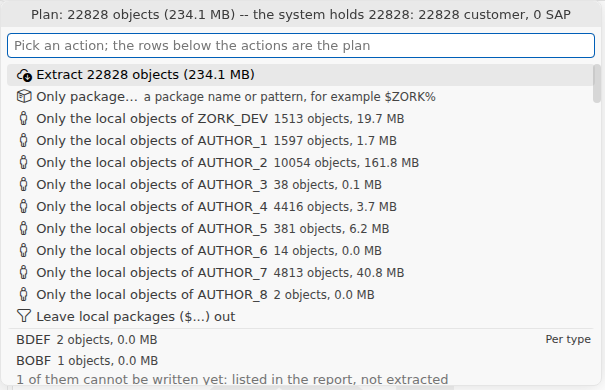
Only package… narrows to a package name or pattern. In a pattern
%(or*) is any text and_any one character.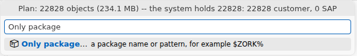
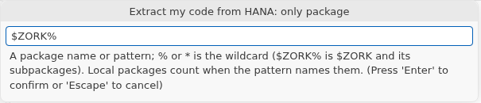
The plan is listed again: 29 objects, the same numbers as on the command line. Beside a pattern it offers only Change package pattern…, because an author filter would add that author's objects from other packages.
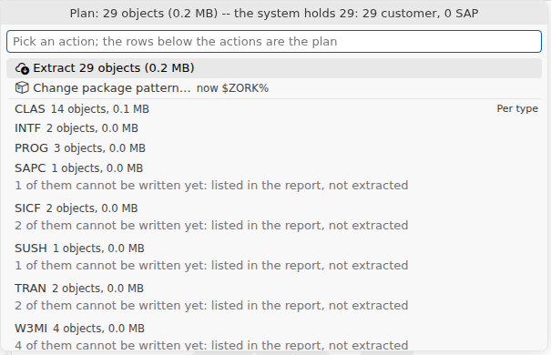
Folder and consent: an empty folder, then the question with the plan's numbers. Nothing is read before Extract.
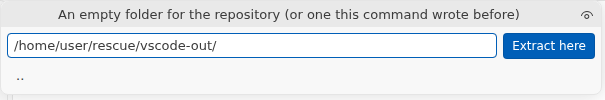
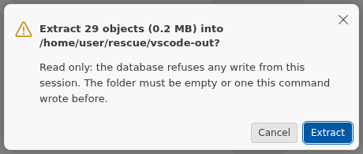
Progress: cancellable; the line shows what the sidecar is doing.
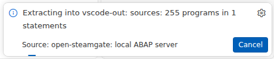
Done: the report opens. It is a warning because 10 objects are unsupported (exit 3). The folder is the same repository the command line wrote.
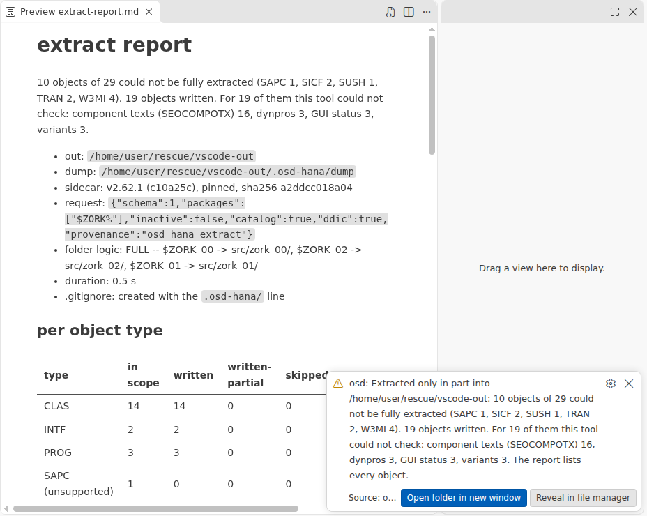
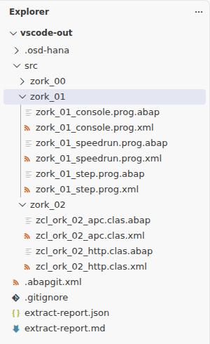
4The proof
Same input, same bytes. Four runs into four empty folders wrote the same 43 files (41 under src/, .abapgit.xml, .gitignore), each with the same SHA-256.
| Run | Selection |
|---|---|
| Command line, 0.7.3131 (twice) | --no-local --package '$ZORK%' |
| Command line, #983 | --package '$ZORK%' |
| VS Code, #983 | Only package… $ZORK% |
Against the public source. The 41 rescued files compared byte for byte with zork-abap:
| Compared with | Identical | Different | Only rescued | Only upstream |
|---|---|---|---|---|
commit 0c8d96b (pinned by the pack) | 18 | 19 | 4 | 19 |
commit dfaef62 (best match on main) | 35 | 2 | 4 | 14 |
- 39 of the 41 files are byte-identical to a file somewhere in the repository's history: the system held an older version.
- The 4 rescued-only files are the two classes of
$ZORK_02, identical to the never-mergedapc-consolebranch. - One class differs from every commit by a single comment line, edited on the system and never pushed. The rescue is the only copy of it.
Known limits seen here
- MIME objects, transactions, ICF nodes, APC applications and authorization defaults are listed, not written. So the rescued interpreter has no story file and does not start on its own.
- No
package.devc.xmlis written; screens and GUI statuses are not in the dump. - Fixed in 0.7.3140 (#983):
--packagenarrowing without--no-local,*as a wildcard, the package step in VS Code, a stop with exit code 6 on a chunk of only MIME objects, and sources looked up in the wrong folder in dumps over 500 objects.